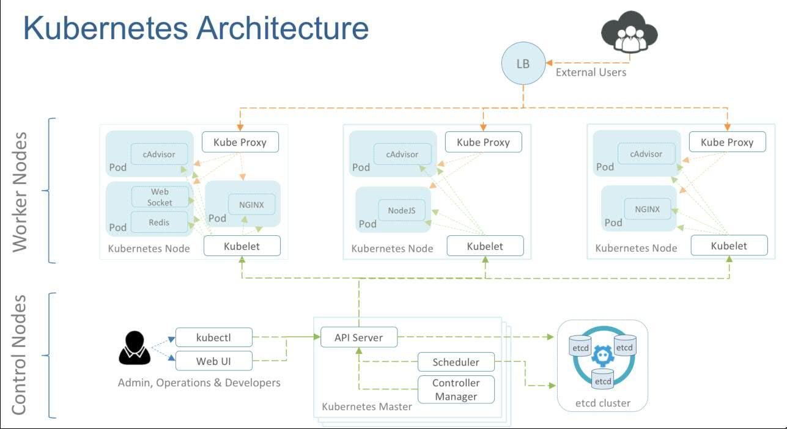

k8s和swarm一样是一个容器编排的工具, 本文记录了k8s的基本使用及其原理。
简介

k8s可以自动化、容器化应用程序的部署、扩展和管理。通常结合docker进行工作。核心组件：
- etcd：保存整个集群的状态
- apiserver：提供了资源操作的唯一入口，并提供认真、授权、访问控制、api机制和发现等机制
- controller manager：维护集群的状态，比如故障检测、自动扩展、滚动更新等
- scheduler：负责资源的调度，按照预期的调度策略将Pod调度到相应的node机器上
- kubelet：负责维护容器的声明周期，同时也负责VOLUME和网络的管理
- container runtime：负责镜像管理及pod和容器的真正运行
- kube-proxy：为service提供cluster内部的服务发现和负载均衡
1. 环境搭建
minikube使用
参考: https://github.com/kubernetes/minikube
MacOS安装命令: brew cask install minikube, 之后执行minikube start命令来创建
2. 基本概念
角色： manager + node
pod： pod是k8s调度的最小单位，在k8s中是不直接对container进行直接操作的，一个pod中可能包含一个或者多个container。在一个pod中的container共享同一个namespace。
3 pod详解
每个pod中包含一个或者多个container容器。每个pod中都有一个pause容器，该容器保存所有容器的状态，通过管理pause容器可以实现管理pod中所有容器的效果。Pod（就像在鲸鱼荚或者豌豆荚中）是一组（一个或多个）容器（例如 Docker 容器），这些容器共享存储、网络、以及怎样运行这些容器的声明。Pod中的内容总是并置（colocated）的并且一同调度，在共享的上下文中运行。Pod所建模的是特定于应用的“逻辑主机”，其中包含一个或多个应用容器，这些容器是相对紧密的耦合在一起 — 在容器出现之前，在相同的物理机或虚拟机上运行意味着在相同的逻辑主机上运行。
Pod的共享上下文是一组 Linux命名空间、cgroups、以及其他潜在的资源隔离相关的因素。
Pod中的所有容器共享一个IP地址和端口空间，并且可以通过localhost互相发现。他们也能通过标准的进程间通信（如 SystemV 信号量或 POSIX 共享内存）方式进行互相通信。不同Pod中的容器的IP地址互不相同，没有特殊配置 就不能使用IPC进行通信。这些容器之间经常通过Pod IP地址进行通信。
Pod中的应用也能访问共享卷，共享卷是Pod定义的一部分，可被用来挂载到每个应用的文件系统上。Pod中的容器可以访问共同的数据卷来实现荣期间数据的共享，k8s中的数据卷是Pod级别的。
一般来说，Pod 不会消失，直到人为销毁他们。这可能是一个人或控制器。这个规则的唯一例外是成功或失败的 phase 超过一段时间（由 master 确定）的Pod将过期并被自动销毁。
Pod可以通过创建副本实现动态的伸缩。可以是手动的进行设置，也可以自动的进行伸缩（需要依靠监控平台）。
3.1 Pod的基本操作
定义Pod
1 | apiVersion: v1 // k8s的api版本 |
创建Pod
kubectl create -f xxx.yaml 使用create命令来创建一个Pod
查询Pod
kubectl get pod pod-name该命令，用来查询，获取Pod的简要信息。输出的结果中：
- NAME：Pod的名称
- READY：Pod的准备状况，右边的数字表示Pod包含的容器的总数，左边的数字是准备就绪的容器数目。所谓的准备状况是指是否准备接收请求，它的准备状态取决于容器，即所有的容器都准备就绪了，Pod才准备就绪了。
- STATUS：Pod的状态
- RESTARTS：Pod的重启次数
- AGE：Pod的运行时间
可以使用kubectl get pod pod-name --output json命令来查看详细的信息。
查看Pod的状态和生命周期：kubectl describe pod pod-name
删除Pod
kubectl delete pod pod-name删除指定的Pod，使用kubectl delete pod -all 删除全部的Pod
更新Pod
kubectl replace xxx.yaml 使用该命令进行更新
3.2 Pod的网络
Pod中的所有容器网络是共享的。每个Pod都拥有一个扁平化共享网络命名空间的IP，称为PodIP. 在Pod运行后使用
1 | # 可以查看PodIP |
3.3 Pod的状态和生命周期
Pod的本质是一组容器。Pod的状态是通过容器的状态来体现的，容器的状态变化会影响Pod的状态变化，触发Pod的声明周期转换。k8s中对于pod中的容器进行了状态的记录，如下：
1 | - waiting: 容器正在等待创建 |
使用kubectl describe pod pod-name可以查看Pod中容器的运行状态。
Pod的生命周期：
- pending：Pod已经被创建，但是其中的一个或者多个容器还没有创建。
- Running：Pod被调度到了Node，所有的容器已经被创建
- Succeeded：Pod中所有的容器正常退出
- Failed：Pod中的所有容器退出，至少一个容器是一次退出的。
1 | # 该命令查看Pod的处于生命周期的哪个阶段。 |
Pod被创建成功之后，首先会进入Pending阶段，然后被调度到Node后运行，进入running阶段。
3.4 Pod的调度
所谓的Pod的调度，就是Pod被创建之后，被分配到集群中的哪个Node上。k8s中的调度算法分为两步：
- 筛选出符合条件的Node：通过一系列的过滤函数，主要是对Node的cpu、内存资源，端口的使用等筛选。
- 选择最优的Node：通过一系列的优先级函数来评估出最优的Node。
有时需要将Pod调度到指定的Node上，此时使用Node Selector来完成。通过kubectl get node命令可以获取集群中的所有的Node，使用kubectl label nodes hostname 标签命令来为Node添加标签, 在定义Pod的时候使用Node Selector来选择Node。
1 | metadata: |
此外还可以直接使用：nodeName进行指定
1 | spec: |
3.5 问题定位
使用kubectl logs命令查询Pod容器的日志。
连接远程的容器：kubectl attach和kubectl exec pod-name两个命令都可以。
4 service
service与Pod的关联是通过Label来实现的。service会为访问者提供一个固定的访问地址，用于在访问时重定向到相应的后端。
创建service的时候，指定要关联的Pod的标签，当该service创建之后作为代理服务器，当作Pod的访问入口。
1 | apiVersion: v1 // k8s的API版本 |
5 数据持久化
在k8s系统中，需要对Pod数据进行持久化。
k8s中的数据卷可以分为：
- 本地数据卷:
- EmptyDir: 如果配置了此数据卷，在Pod被分配到Node上的时候，会在Node上创建EmptyDir数据卷，并挂载到Pod的容器中。但是Pod的生命周期结束，EmptyDir数据卷会被删除。
- HostPath: 允许将宿主机上的文件系统挂载到Pod中。
- 网络数据卷: 每次Pod创建的时候都会将存储系统的远端文件目录挂载到容器中。
- NFS等
- 信息数据卷: 主要用来给容器传递配置信息
6 kubernetes网络

Pod中所有的容器都是互通的。
参考
- 《kubernets实战》